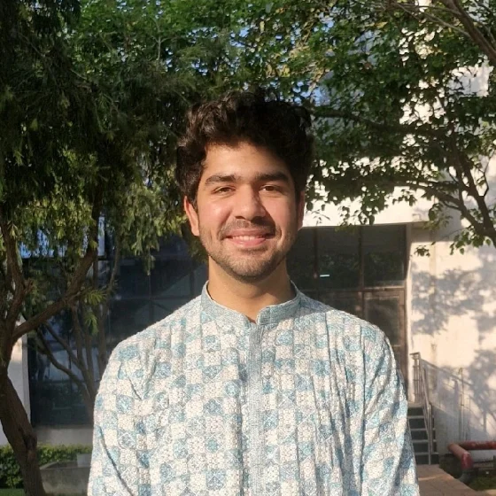

ResearchFirst author
“Label Construction and the Measured Value of Nonlinear Forecasting Models: Evidence from Bank Failure Prediction”
Under review
International Journal of Forecasting (Elsevier)
Aryan Kochhar

Open to opportunities
I build AI agents and RAG pipelines for a living, and I’m pretty relaxed about most everything else — except my coffee order, which comes non-negotiable.
Agents that chain tools, not just answer questions.
Grounding LLMs in real data, reliably.
Where finance meets machine learning.
I’m a final-year AI/ML student at Vellore Institute of Technology (CGPA 9.27, if that matters to you), building agentic systems and RAG pipelines that chain tools together to actually get things done — not just answer questions.
In the summer of 2025 I interned at WE Excel Software, where I built an OCR pipeline for HR document processing and tuned retrieval for a RAG-based HR chatbot. Outside of internships, I’m usually deep in a side project — teaching an agent to backtest trading strategies, or turning a text prompt into a whole 3D city.
When I’m not at my desk, I’m probably making another cup of coffee, or sidequesting with my girlfriend and friends — usually both are happening at once.
(interpersonal skills example lol)
B.Tech, Computer Science (AI & ML)
Vellore Institute of Technology
Aug 2023 – Jul 2027 · CGPA 9.27
AI/ML Intern — WE Excel Software Pvt. Ltd.
June 2025 · On-site
ResearchFirst author
International Journal of Forecasting (Elsevier)
Bugs I found in other people’s libraries, fixed, and got merged.
Drop me a line — I read everything, and I reply faster than I probably should.
aryankochhar2005@gmail.com